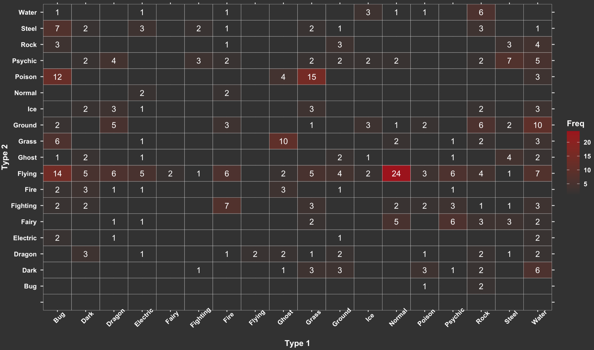

Pokémon are creatures of various types. There are 800 Pokémon inhabiting in the Pokémon universe, waiting for the right trainer to catch, train, and love them. Most Pokémon has two types, Type 1 and Type 2. It’s interesting to explore the distribution of types and the relationship between them.
Pokémon with their primary type.

Pokémon Types Distribution
Most Pokémons have two types. Are there certain kind of links between type one and typen two? Let's figure out!

Pokémon Generations and Types
Like TV shows, Pokémon also has multiple seasons due to different versions of the Pokémongames and aminations. It is called "generation" in the Pokémon world. In generation one, most Pokémons' first types are Bug, Grass, and Normal. In generation six, there are more Ghost, Rock, and Steel.